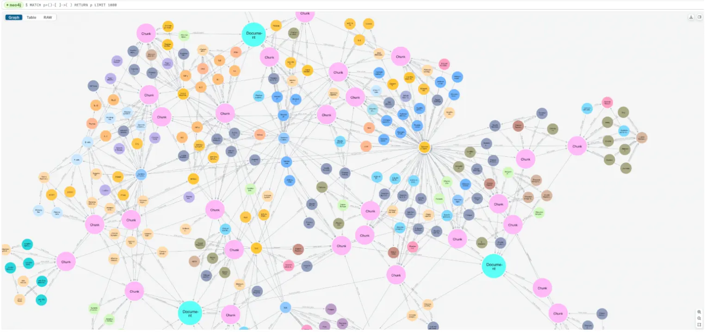
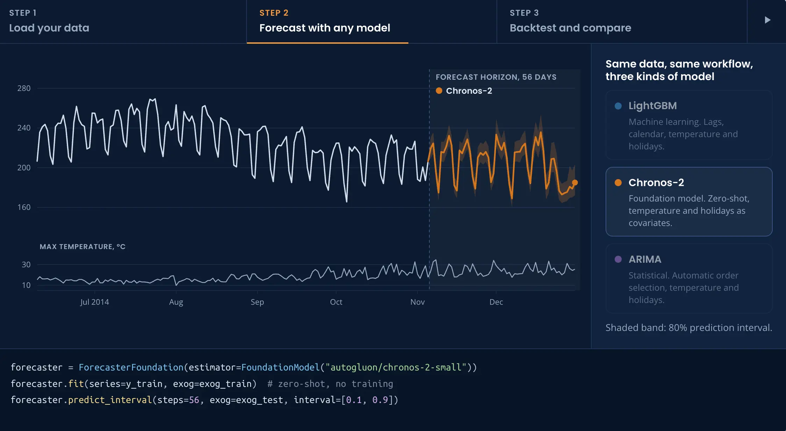

Estudiante de Ingeniería Informática y Matemática Aplicada al Análisis de Datos, Desarrollo Web y de Apps
Proyectos
Universidad
EPANET: Predicción de la demanda eléctrica
Análisis de la demanda eléctrica y detección de anomalías.
Proyecto de análisis de datos para predecir la demanda eléctrica y detectar diferencias entre la demanda real
y la programada. Aprendí a entrenar modelos predictivos, evaluar sus resultados y representar los datos en
Power BI.
Python
SQL y MySQL
Power BI
Machine Learning
Detección de fenómenos meteorológicos extremos
Análisis de variables meteorológicas para anticipar episodios extremos.
Trabajo centrado en la detección temprana de fenómenos meteorológicos extremos mediante técnicas de
aprendizaje automático. El objetivo es analizar variables meteorológicas históricas, identificar patrones
asociados a eventos extremos y estudiar la capacidad predictiva de distintos modelos. Además se realiza un
dashboard interactivo para visualizar los resultados y facilitar la interpretación de los modelos.
Tecnologías utilizadas:
Python
Pandas y NumPy
Xarray para datos meteorológicos multidimensionales
Plataforma de supervisión IoT para supermercados y aparcamientos.
Diseño e implementación de un sistema de supervisión IoT para establecimientos comerciales y aparcamientos.
Integra sensores de distancia ultrasónicos, conteo de aforo por infrarrojos, control de temperatura con
histéresis y cámaras ESP32-CAM. Este proyecto me permite aprender a diseñar arquitecturas IoT desacopladas,
gestionar datos en JSON y coordinar tareas mediante metodologías ágiles.
Predicción de series temporales y análisis de dinámicas de arbitraje del spread E/W de naphtha.
Proyecto de análisis predictivo centrado en estimar la evolución del diferencial de precios este-oeste
(East/West spread) de la nafta. Se utilizan modelos de series temporales y técnicas de aprendizaje automático
para identificar patrones en los datos y apoyar la toma de decisiones relacionadas con el arbitraje comercial.
Tecnologías utilizadas:
Python
Pandas y NumPy
Series temporales
Machine Learning
GraphRAG: Anonimización de datos y consultas sobre grafos

Aplicación de GraphRAG para consultar información mediante lenguaje natural.
Colaboración en proyectos basados en tecnologías GraphRAG, relacionados con información de clientes y
documentación del ámbito legal. Mi trabajo se centró en la anonimización de datos sensibles para proteger la
privacidad y en mejorar el determinismo del LLM en las consultas generadas a partir de lenguaje natural hacia
Cypher.
Tecnologías y áreas de trabajo:
Python
GraphRAG y modelos de lenguaje
Cypher y Neo4j
Anonimización y protección de datos
Procesamiento de lenguaje natural (NLP)
Proyectos personales
Análisis predictivo del coste del transporte marítimo de GLP

Estudio de variables para analizar la viabilidad de predecir un índice de transporte marítimo de
GLP.
Proyecto de análisis de datos centrado en estudiar la viabilidad de predecir un índice relacionado con el
transporte marítimo de gas licuado de petróleo (GLP) en la ruta entre el golfo de Estados Unidos y Japón,
explorando variables clave para apoyar decisiones comerciales.
Tecnologías utilizadas:
Python
Pandas y NumPy
Análisis exploratorio de datos
Machine Learning
Análisis de series temporales
Cómo trabajo
En mis proyectos intento seguir un proceso ordenado, desde la comprensión del problema hasta la evaluación de
los resultados.
Comprender el problema: definir los objetivos, identificar las necesidades y determinar qué
resultado se quiere conseguir.
Recopilar y preparar los datos: buscar las fuentes de información y comprobar la calidad de
los datos.
Detectar valores ausentes o inconsistencias.
Limpiar y transformar los datos.
Seleccionar las variables relevantes para el análisis.
Desarrollar la solución: programar, analizar los datos y aplicar las técnicas adecuadas según
las características de cada proyecto.
Evaluar los resultados: comprobar el funcionamiento de la solución, comparar resultados y
detectar posibles errores o mejoras.
Comunicar las conclusiones: documentar el trabajo y presentar los resultados mediante
visualizaciones o interfaces que faciliten su interpretación.
Resumen de proyectos
Resumen de proyectos, categorías, años y tecnologías principales
Proyecto
Categoría
Año
Tecnología principal
EPANET: Predicción de la demanda eléctrica
Universidad
2025
Python
Detección de fenómenos meteorológicos extremos
Universidad
2026
Python
Lumina: Sistema de Supervisión IoT
Universidad
2026
IoT
Predicción del Spread E/W de Naphtha
Prácticas
2026
Python
GraphRAG: Anonimización y consultas sobre grafos
Prácticas
2026
Python
Análisis predictivo del coste del transporte marítimo de GLP